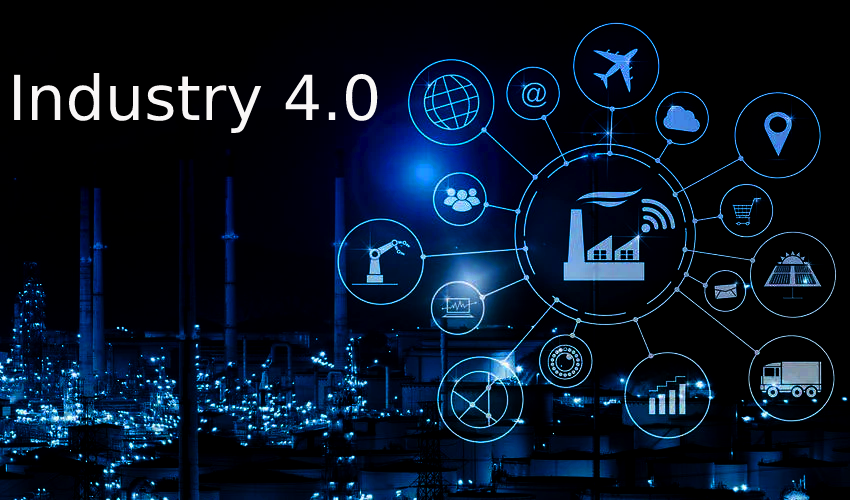

INDUSTRIA 4.0
La transformación digital está cambiando la forma en que las industrias producen, administran y optimizan sus procesos.
Explorar Industria 4.0La Industria 4.0 representa una nueva etapa en la evolución de los sistemas productivos. Se caracteriza por la integración de tecnologías digitales, sistemas inteligentes, automatización y conectividad dentro de los procesos industriales.
Su principal objetivo es desarrollar fábricas inteligentes capaces de recopilar, analizar y utilizar información en tiempo real. Esto permite que máquinas, equipos, sensores, sistemas informáticos y personas puedan interactuar de manera más eficiente.
Para la Ingeniería Industrial, la Industria 4.0 representa una herramienta fundamental para mejorar la productividad, reducir desperdicios, controlar la calidad, optimizar recursos y facilitar la toma de decisiones dentro de las organizaciones.

Selecciona una tecnología para conocer su funcionamiento, aplicación e importancia dentro de la industria moderna.
Representación didáctica de las principales tecnologías de los sistemas industriales modernos.
* Los porcentajes son ilustrativos y tienen fines académicos. No representan estadísticas oficiales.
Cada revolución industrial ha transformado los sistemas de producción mediante nuevas tecnologías.
| Etapa | Período | Tecnología | Característica principal |
|---|---|---|---|
| Industria 1.0 | Siglo XVIII | Máquina de vapor | Mecanización de los procesos productivos. |
| Industria 2.0 | Finales del siglo XIX | Electricidad | Producción en masa y líneas de ensamblaje. |
| Industria 3.0 | Segunda mitad del siglo XX | Electrónica e informática | Automatización de procesos industriales. |
| Industria 4.0 | Siglo XXI | IA, IoT y sistemas digitales | Producción inteligente e interconectada. |
Haz clic en cualquiera de las tres aplicaciones para conocer su funcionamiento, ejemplos y beneficios.
La transformación digital ofrece grandes oportunidades, pero también presenta retos.
La Industria 4.0 no consiste únicamente en incorporar nuevas tecnologías, sino en transformar la manera en que las organizaciones diseñan, producen, administran y mejoran sus procesos. Para la Ingeniería Industrial representa una oportunidad para desarrollar sistemas productivos más eficientes, inteligentes, flexibles y competitivos.
Innovación hoy, industria del mañana.